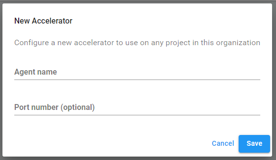

Unity Accelerator
Overview
The Unity Accelerator is a caching proxy agent that keeps copies of a team’s imported assets to speed up teamwork. The goal of the accelerator is to help teams reduce iteration time. An Accelerator coordinates asset sharing when your team is working on the same local network so that you don’t need to reimport portions of your project. This is done via the Asset Import Pipeline v2 Unity Editor capabilities. Optionally, Accelerator can also be used with Unity Teams Advanced to share Collaborate source assets, which significantly reduces download time from the CollaborateA Unity cloud-hosted service that provides a simple way for teams to save, share, and contribute to their Unity project. More info
See in Glossary service.
When you install an Accelerator on your local network, the Unity Editor (version 2019.3 or higher; see Unity Editor requirements below) communicates with it to store and retrieve assets that other team members need, have changed, or built. The Accelerator keeps temporary copies of these assets to avoid wasting time and bandwidth retrieving or reimporting them.
Contents
- Installing an Accelerator
- Monitoring Accelerators
- Stopping and restarting the Accelerator service
- Command Line Tools
- Mirroring Multiple Accelerators
- Troubleshooting
Installing an Accelerator
Requirements
Local hosting requirements
Install an Accelerator on each network your team regularly works on. You must have a machine running on your local network that can host an Accelerator. When selecting a host, consider the following requirements:
- The local host must run one of the following operating systems:
- Linux (Ubuntu 16.04, Ubuntu 18.04, or CentOS 7)
For Linux you must install Acccelerator as a root user. - Windows Server 2008R2 / Windows 7 or higher (64bit)
- Mac OS X 10.12 or higher (64bit)
- Linux (Ubuntu 16.04, Ubuntu 18.04, or CentOS 7)
- The local host must have sufficient local storage space to host most of your project’s files, preferably on a solid-state drive separate from the drive that hosts your operating system.
- The local host should have as much memory as is reasonably affordable. The minimum should be 2GB of RAM, but if more memory is available it will be used by the operating system to buffer cached items, resulting in higher performance for commonly accessed items. Usual recommendation is 32GB of RAM.
- The local host must be attached to the same network as your team, or locally routable with appropriate firewall policies that allow access to the Accelerator’s IP address and port (TCP).
- Anyone with access to the host machine has access to your project’s files, regardless of permission structures within your Unity Organization. As such, Unity recommends restricting that machine so that only an Organization Owner or Manager can access and interact with the Accelerator.
Unity Editor requirements
Your Unity project must use version 2019.3 or higher of the Unity Engine.
Installing an Accelerator via the Installer
If you do not have Unity Teams Advanced, you can download and install Unity Accelerator directly and uncheck the registration token during installation:
Note: If installing Accelerator on a Linux system, see Verifying your Accelerator version.
You can also install the accelerator via Docker Hub.
Installing Accelerator on a “headless” machine
On each platform, you can run the installer from the command line. If you execute the installer with an argument of --help, it displays the various options available. To run a full install without any prompts, you should provide values for the following:
-
--storagedirsets the directory for the Accelerator to store files and configurations. -
--registration-tokenspecifies the token provided in the developer dashboard after creating the Accelerator. This is required to use Accelerator with Collaborate. - Use
--modeunattended for automated installations that should not query anything. This uses default values, or values from other option flags provided. - On Mac OS X, you need to mount the disk image (DMG) and run the binary located in the installer app’s directory (located at
Contents/MacOS/installbuilder.sh).
Configuring Editors to use an Accelerator
When installing an Accelerator, the final step of the setup wizard displays the IP address and Port to reference in your Editor, in the following format:
[IP]:[Port]
To configure your Editor to use that Accelerator as an Asset pipeline version 2 Cache ServerA standalone app that you can run on your local computer that stores the imported asset data to reduce the time it takes to import assets. More info
See in Glossary, follow these steps:
- In the Unity Editor, select Edit > Project Settings… (Windows) or Unity > Project Settings… (OSX).
- Select Editor from the left menu.
- Under the Cache Server section, set Mode to Enabled.
- Fill in the IP address with Accelerator’s IP address from the setup wizard.
- Press the Check Connection button to test connectivity.
You can optionally choose a different namespace prefix from the default, in case you wish to ensure isolation from other projects. You can also individually disable uploading or downloading as needed. For example, you might want a build system to only have uploading enabled, and developers’ editors only have download enabled. Note the TLS/SSL option is only a feature in editor versions from 2020.1 onward and the accelerator must be configured for TLS as well.
In the main editor view, you can check the accelerator connectivity by looking at the status bar on the lower right (only in editor versions from 2020.1 onward):
If you’d like, you can configure the accelerator to use via the Global settings, which will be used by default for all projects unless overridden by the project settings. To configure the global settings, select the Edit > Preferences… menu item:
Installing an Accelerator via Docker Hub
A container is provided on Docker Hub at https://hub.docker.com/repository/docker/unitytechnologies/accelerator.
First Time Setup
Unity recommends that you use a persistent storage area for hosting the Accelerator configuration and cache. To set this up for the first time, you will want to use one or more of the following variables when running the container for the first time (some examples will be below). The variables are only used if the startup does not find a configuration file so it’s safe to run with them set on successive runs.
| Variable | Usage |
|---|---|
| COLLAB_REGISTRATION_TOKEN | Accelerate Unity Collaborate |
| DISABLE_USAGE_STATS | Set to true to disable usage stats – leaving usage stats enabled can help improve the Accelerator’s features and performance by giving Unity valuable feedback. |
| USER | The user name for the local, built-in dashboard. |
| PASSWORD | The password for the local, built-in dashboard. |
| CERT_HOSTNAME | The hostname to use for TLS support. This is used for redirects, etc. and goes along with CERT_PEM and KEY_PEM below. |
| CERT_PEM | The path to a cert.pem to use for TLS support. If you set CERT_HOSTNAME but do not set CERT_PEM, <persist_dir>/cert.pem will be assumed. |
| KEY_PEM | The path to a key.pem to use for TLS support. If you set CERT_HOSTNAME but do not set KEY_PEM, <persist_dir>/key.pem will be assumed. |
For example, to start up and register for use with the Collaborate service, you might run something like this:
$ docker run --rm -ti -v "${PWD}/agent:/agent" -e 'COLLAB_REGISTRATION_TOKEN=ft0bJvbRD' unitytechnologies/accelerator:latest
To override TLS settings, continuing with the above example, ensure you have your cert.pem and key.pem in the /agent path specified and then include a CERT_HOSTNAME like this:
$ docker run --rm -ti -v "${PWD}/agent:/agent" -e 'CERT_HOSTNAME=myhostname.com' -e 'COLLAB_REGISTRATION_TOKEN=ft0bJvbRD' unitytechnologies/accelerator:latest
Subsequent Execution
You can also set any environment variables the accelerator would normally recognize. See unity-accelerator --all-help and look for options that indicate Default: $SOME_VARIABLE. There are two that the container will set if you do not:
| variable | usage |
|---|---|
| UNITY_ACCELERATOR_PERSIST | Container default is /agent. This is the directory where unity-accelerator.cfg resides as well as other persisted data (cachedir possibly being different). |
| UNITY_ACCELERATOR_LOG_STDOUT | Container default is true. This, if true, will output logs to stdout only; false if you want actual log files written within the persist directory. |
Running the container
We sign our docker images so we strongly recommend you enable Docker Content Trust:
$ export DOCKER_CONTENT_TRUST=1
Normally, you should be able to run the Accelerator like the following:
$ docker run -p 80:80 -p 443:443 -p 10080:10080 -v "${PWD}/agent:/agent" unitytechnologies/accelerator:latest
However, If you would like to choose a different location for where the Accelerator will store the configuration and cached artifacts, you might choose to provide additional environment variable configuration values like this:
$ docker run -p 80:80 -p 443:443 -p 10080:10080 -v "${PWD}/agent:/mnt/another_spot" -e "UNITY_ACCELERATOR_PERSIST=/mnt/another_spot" -e "UNITY_ACCELERATOR_DEBUG=true" unitytechnologies/accelerator:latest
To set username and password for local dashboard, you can use USER and PASSWORD environment variables:
$ docker run -p 80:80 --env PASSWORD=[PASSWORD] --env USER=[USERNAME] unitytechnologies/accelerator:latest
Exposed Ports
The following are the default values for ports used by Unity Accelerator: 80, 443, 10080, 10443.
Accelerator with Unity Teams Advanced
Accelerator provides additional benefits with Unity Teams Advanced:
- Collaborate integration to ensure recently added or modified source assets are delivered on the local network, dramatically reducing download times.
- Remote Monitoring on the developer dashboard (see monitoring Accelerators).
- Secure transport and access control of source assets shared between Unity Editors and the Accelerator (see source asset security).
Setup
If you have Unity Teams Advanced, one of your Organization’s Owners or Managers can create an Accelerator from the developer dashboard by following these steps:
- From the Develop tab of the dashboard, select the project you want to create an Accelerator for.
- In the project view, select Collaborate > Accelerator from the left navigation bar.
- Click the New Accelerator button.
- In the New Accelerator prompt, enter an agent name for Unity to use to identify the Accelerator agent. You can also optionally specify a port number.

Note: The current limit is three Accelerators per Organization.
- Click Save to confirm your settings.
- On the following screen, copy the registration token, then click the Download Accelerator button in the top-right corner, and select the appropriate operating system.

You can also install the accelerator via Docker Hub. - Launch the downloaded installer, and follow the installation wizard. Use the registration token you copied to register the Accelerator with Unity Collaborate. This will allow you to use the Accelerator for enhanced Collaborate performance.
Note: If installing Accelerator on a Linux system, see Verifying your Accelerator version.
Source asset security
When used with Unity Teams Advanced, each Accelerator receives its own security certificate to prove it has permission to access your Organization. Before an Accelerator uploads or downloads any content, the Unity Editor making the request uses SSL/TLS to securely connect to the Accelerator and verifies its authenticity. When Unity Editors discover and connect to an Accelerator, instead of passing a normal Unity user token, they receive a special token from the Unity Identity service. These tokens verify the user’s identity and access to a single project within your Organization, thereby protecting access to any other Organizations and projects while using an Accelerator.
Monitoring Accelerators
Local administrator dashboard
The Accelerator has a built-in dashboard for quick monitoring and configuration changes.
See the Command Line Tools section for information on how to find out what your dashboard URL is; though if you know the ip and port of the accelerator you can just use http://ip:port/dashboard and the accelerator will handle any needed redirects. For full metrics monitoring see Accessing Accelerator metrics directly and the full configuration of the Accelerator is available through its unity-accelerator.cfg file.
Developer dashboard (Unity Teams Advanced users only)
If you are a Unity Teams Advanced user, you can monitor Accelerator metrics from the developer dashboard. These metrics only apply to source assets, and do not apply to generated (imported) assets.
To view a summary of your project’s Accelerators, select that project, then select Collaborate > Accelerators from the left navigation bar. In this menu, you can view the following information:
| Property | Description |
|---|---|
| Name | The name you provided when you created the Accelerator. |
| Avg. Efficiency | The average efficiency of the Accelerator over the past 24 hours. |
| Editors | The number of Unity Editors connected to the Accelerator. |
| Latest Activity | The most recent use of the Accelerator. |
| Status | The Accelerator can be in one of the following states: - Available indicates that the Accelerator is not installed or registered with the Collaborate service. - Ready indicates that the Accelerator is registered with the Collaborate service, but no Unity Editors are connected to it. - In use indicates that Unity Editors are connected, or have recently connected to the Accelerator. - Idle indicates that Unity Editors have used the Accelerator previously, but there has been no recent activity. - Not Listening indicates that the Accelerator could not connect to the configured port (most likely because another service is already using it). - Disconnected indicates that the Accelerator is no longer connected to the service for usage reporting, or receiving configuration changes. |
| Enabled | Indicates whether Unity Editors can discover and attempt to use the Accelerator. Unity Editors do not use disabled Accelerators, regardless of whether they’re running. |
Click Details for an Accelerator to view the following in-depth information about its usage. This data updates every 10 minutes.
Efficiency
This shows the average performance of the Accelerator for the past 24 hours. The values range from 0 to 100, measuring the percentage of content downloads provided locally from the Accelerator, rather than remotely from the Collaborate service. A value of 0 indicates that the Accelerator is not actively helping with content downloads. A value of 100 indicates that the Accelerator is providing all content downloads.
Bytes Removed
Periodically, the Accelerator clears space to store new assets. When it does, the dashboard reports the number of bytes allocated to older assets that the Accelerator removed from local storage.
Note: This is a normal operation to help maintain a healthy Accelerator. However, if this value seems to be adversely affecting the Accelerator’s efficiency, you might need to add more storage space to accommodate your team’s usage. Ideally, the file system running the Accelerator should use a solid-state hard drive with enough free disk space to house all files in the most recent version of active projects, but this is not a requirement. If insufficient storage is available, the overall efficiency of the Accelerator declines.
Bytes Delivered
Distributed teams might have local contributors working with an Accelerator, as well as remote contributors using the Collaborate service. In these cases, the Accelerator listens for remote publish events, and proactively downloads the affected content for users on its local network.
When you use an Accelerator, it reports on the overall number of bytes it has requested and downloaded from the remote Collaborate service, rather than those it has delivered from the local network. More bytes delivered locally is better for your team, because it places less load on your network gateway.
Time Saved
The Accelerator tracks bandwidth when it delivers locally stored assets instead of downloading them from the Collaborate service, and reports the difference in time the Unity Editor would have waited to download assets remotely as time saved.
Note: The aforementioned metrics apply only to source assets. They do not apply to generated (imported) assets.
Accessing Accelerator metrics directly
If you do not use Unity Teams Advanced, each Accelerator hosts Prometheus metric reports as /metrics, which you can query from the local network. The following is a full list of metrics that you can access:
| Metric | Description |
|---|---|
process_resident_memory_bytes |
The amount of memory used by the Accelerator. |
uta_agent_sys_cpu_percent |
The amount of CPU used by the system. |
uta_agent_sys_mem_bytes_used |
The amount of memory used by the system. |
uta_agent_protobuf_connects |
The number of times Unity Editors have connected to the service for the Asset Import Pipeline. |
uta_agent_protobuf_bytes_in |
The number of bytes received from the Asset Import Pipeline. |
uta_agent_protobuf_bytes_out |
The number of bytes sent to the Asset Import Pipeline. |
uta_agent_protobuf_requests{code="0",method="get"} |
The number of items sent to the Asset Import Pipeline. |
uta_agent_protobuf_requests{code="1",method="get"} |
The number of errors occurring from items sent to the Asset Import Pipeline. |
uta_agent_protobuf_requests{code="2",method="get"} |
The number of namespace errors occurring from items sent to the Asset Import Pipeline. |
uta_agent_protobuf_requests{code="3",method="get"} |
The number of requests made from the Asset Import Pipeline for items that have not been cached. |
uta_agent_protobuf_requests{code="0",method="put"} |
The number of items received from the Asset Import Pipeline. |
uta_agent_protobuf_requests{code="1",method="put"} |
The number of errors occurring from items received from the Asset Import Pipeline. |
uta_agent_protobuf_requests{code="2",method="put"} |
The number of namespace errors occurring from items received from the Asset Import Pipeline. |
uta_agent_protobuf_requests{code="0",method="delete"} |
The number of requests made from Asset Import Pipeline to remove items. |
uta_agent_protobuf_requests{code="1",method="delete"} |
The number of errors occurring from the Asset Import Pipeline removing items. |
uta_agent_protobuf_requests{code="2",method="delete"} |
The number of namespace errors occurring from requests to remove items by the Asset Import Pipeline. |
uta_agent_protobuf_requests{code="3",method="delete"} |
The number of requests to remove items made from the Asset Import Pipeline for items that have not been cached. |
uta_agent_cache_bytes_evicted_unscheduled |
Number of bytes evicted from cache during an “unscheduled” pass. Unscheduled evictions occur when running out of disk space while processing a request. Normally, scheduled background evictions should keep up with demand, so an increase in this metric’s value indicates an overwhelmed server. Increasing the configuration’s CacheMinFreeBytes or CacheMinFreePercent may help to give more of a free space buffer, or you may need to upgrade the underlying hardware or install an additional accelerator. |
uta_agent_cache_files_evicted_unscheduled |
Similar to the above uta_agent_cache_bytes_evicted_unscheduled metrics, but counts files evicted instead of byte count. This might be an easier metric to alert on. For example: Alert when files metric increases by more than 1 per second. |
uta_agent_protobuf_cache_hits |
Number of Asset Import Pipeline requests that were served from cache. |
uta_agent_protobuf_cache_misses |
Number of Asset Import Pipeline requests that could not be served from cache. |
uta_agent_protobuf_cache_bytes_out |
Number of bytes served from cache to the Asset Import Pipeline. |
uta_agent_protobuf_cache_bytes_in |
Number of bytes stored into the cache received from the Asset Import Pipeline. |
Unity Editor log debugging
The Unity Editor logs are useful for viewing debugging information. To view logs for Collaborate events, run your Unity Editor (or the Unity Hub) with an environment variable set to enableCollabEventLogs=true. Logs marked with [collab-accelerator] can help provide insight to your Accelerator’s performance.
The block below shows an example log output for the Accelerator using Asset Import Pipeline v2. This does not require enableCollabEventLogs=true because it’s not for Collaborate.
2019-10-07T11:34:51-0700 Using Asset Import Pipeline V2.
...
2019-08-08T09:04:03-0700 Start importing Assets/Scenes/tame-the-unicorn.png guid(07a0d449dcaef4d2ba104e9d9b350de6)
2019-08-08T09:04:05-0700 Done importing asset: 'Assets/Scenes/tame-the-unicorn.png' (target hash: 'd5fddd470dd9beedcd7261b6455e436a') in 1.082988 seconds
2019-08-08T09:04:05-0700 RemoteAssetCache::AddArtifactToCacheServer - artifactKey='Guid(07a0d449dcaef4d2ba104e9d9b350de6) Importer(-1,)' Target hash='d5fddd470dd9beedcd7261b6455e436a'
Stopping and restarting the Accelerator service
Accelerator runs as a background process for each platform.
Windows
Open the Services Panel by searching the term “Services” in the Settings menu, or running “_services.msc_” in the Run dialogue (WIN + R). Next, locate the “Unity Accelerator” service in the resulting list. The option to Stop the service or Restart the service appears on the left panel.
Mac OS X
Run the launchctl command from the terminal to control the “com.unity.accelerator” service from the LaunchControl utility. For more information, visit https://www.launchd.info/.
Linux
Use the service console utility to control the “unity-accelerator” service. For more information, visit http://manpages.ubuntu.com/manpages/bionic/man8/service.8.html.
Maintenance
The Accelerator service automatically updates itself during a maintenance period, currently set for 01:00 - 02:00 AM local time according to the machine running the Accelerator. This only occurs if the Accelerator discovers a newer version available.
Accelerator’s installation and uninstallation logs are saved in the operating system’s standard temp directory as unity-accelerator-*install.log. Accelerator’s logs are saved in the storage directory as unity-accelerator.log.
Command line tools
The Accelerator has a large set of command line tools you can use to troubleshoot, configure, and just generally make use of one or more accelerators. For ease of use, it’s best to add the location of the unity-accelerator executable to your PATH. The executable was installed in the path you chose when running the installer, C:\Program Files\Unity\accelerator for example.
The CLI tool has an extensive help system; you can run unity-accelerator with no arguments to get started:
$ unity-accelerator
Unity Accelerator v1.0.524+g96c5e18
Run on a local network to speed up transactions with Unity Services.
.....
You can also run unity-accelerator --all-help to output all the help text for all commands in one go. It’s probably best to pipe the output through less or redirect output to a text file to read.
When working on a specific accelerator, to reconfigure it for example, it’s best to change your working directory to the same as where the unity-accelerator.cfg file is. You can also set the UNITY_ACCELERATOR_PERSIST environment variable to that directory, or you can try to remember to always use the --persist <dir> option, but most find changing the working directory easiest.
One rather common set of cli tools used are the dashboard tools:
$ unity-accelerator dashboard password newaccount
Password: ****
Again: ****
$ unity-accelerator dashboard list
admin
newaccount
$ unity-accelerator dashboard url
http://172.18.37.249:8080/dashboard/
That final tool, dashboard url, is useful to find out what url to put in your browser to visit the built-in dashboard.
Mirroring multiple accelerators
You can configure multiple accelerators to mirror the same cached data if desired. You might want to have two mirrored accelerators running on the same network for high availability – if one crashes, has a hardware failure, or needs maintenance for whatever reason, the other accelerator can compensate. You might also mirror cache servers that are remote from each other, for example a main office might mirror its data to a branch office, providing copies of its cached data for use at the branch office as well.
For now, the mirroring features only provide outgoing data capabilities, also known as “push” or “forwarding”. You can push/forward to multiple accelerators, or even chain them: A sending to B, with B sending to C, and even C sending back to A. You do not need to worry about circular chains; items are time stamped so a receiving accelerator will ignore any incoming items that aren’t newer than what it already has.
Let’s walk through an example where accelerator A has an ip:port of 1.1.1.1:1111 and accelerator B is 2.2.2.2:2222. Let’s say both have no data to start with, so let’s put an item into A and note that it is not in B.
$ echo test1 | unity-accelerator cache put 1.1.1.1:1111 namespace1 key1
$ unity-accelerator cache get 1.1.1.1:1111 namespace1 key1
test1
$ unity-accelerator cache get 2.2.2.2:2222 namespace1 key1
key not found
Now let’s configure A to forward to B. We do this by altering A’s configuration, so log into the machine running accelerator A, shut down the accelerator and:
# Shutdown Accelerator A
$ cd <directory where unity-accelerator.cfg is>
$ unity-accelerator config set ProtobufForwardPuts protobuf:2.2.2.2:2222
# Start Accelerator A back up
We should now be able to put another item into A’s cache and see it forwarded to B.
$ echo test2 | unity-accelerator cache put 1.1.1.1:1111 namespace2 key2
$ unity-accelerator cache get 1.1.1.1:1111 namespace2 key2
test2
$ unity-accelerator cache get 2.2.2.2:2222 namespace2 key2
key not found
# It will take up to a minute before the forwarding occurs, due to how the algorithm works with batching, etc. But within a minute or two you should see...
$ unity-accelerator cache get 2.2.2.2:2222 namespace2 key2
test2
However, this only covers new data (any new items put into accelerator A will be forwarded to accelerator B) but doesn’t cover any existing data. In our example, the first item still is not in accelerator B.
$ unity-accelerator cache get 2.2.2.2:2222 namespace1 key1
key not found
To cover this case, and in cases where you just want to forward all data one time (could be useful when switching from one accelerator to a new one) you can use the “push” command line tool:
$ unity-accelerator cache push 1.1.1.1:1111 2.2.2.2:2222
{"msg":"push completed", "destination":"2.2.2.2:2222", "namespaces":2, "keys":2, "bytes":12, "supercededs":1, "errors":0, "elapsed":"44.054078ms"}
$ unity-accelerator cache get 2.2.2.2:2222 namespace1 key1
test1
The push tool will send a request to the first accelerator and ask it to send all its data to the second accelerator. When it is done, the first accelerator will send back the “push completed” response with detail as to what was done.
There are additional, advanced configuration options you can research by running unity-accelerator config help | less and searching for Forward. You can specify the forwarding concurrency, queue size, error handling, etc.
Also note that you may wish to alter the configuration values for the MaintenanceStart and MaintenanceDuration of each mirrored accelerator so that they do not all shutdown for maintenance at the same time.
Troubleshooting
If you’ve installed an Accelerator, but some Unity Editors are not using it, several things could cause this issue. The following troubleshooting options might help you fix it:
Check the Unity Editor versions in use
Each project contributor must be using an Editor version 2019.3 or higher to use an Accelerator.
Verify users are on the Accelerator’s local network
Make sure the Accelerator is running on the same local area network as the project contributors experiencing issues. Accelerator does not affect contributors who are working remotely.
Test the Accelerator’s connection
Check if the machine experiencing issues can reach the Accelerator. If you use Unity Teams Advanced, follow these steps to access an Accelerator’s health page in your browser:
- In the developer dashboard, select Collaborate > Accelerator.
- Click Details for the Accelerator you want to test.
- Click the info icon next to the Accelerator’s IP Address to display its health page URL.
If you do not use Unity Teams Advanced, enter the Accelerator’s host IP address into the following URL path to display its health page:
[AcceleratorIP]:[AcceleratorPort]/api/agent-health
If the test fails, make sure all host and network firewalls allow access to the Accelerator’s listening IP address and port (TCP). You might need to coordinate with your network administrator to allow access to this port.
Check the Accelerator’s project configuration
If you use Unity Teams Advanced, verify that the Accelerator is configured for the project in question. Navigate to the project in the developer dashboard, and select Collaborate > Accelerator from the left navigation bar. You should see the Accelerator listed for that project.
Verifying your Accelerator version
For Accelerator installations on Linux systems, all Linux executables have signature files that you can verify to ensure that no malicious entities have tampered with your downloaded Accelerator version. You can verify the signature files with a trusted version of GnuPG. The key below signs the current release. The public key block with the key is available at https://collab-accelerator.cloud.unity3d.com/.
pub rsa4096 2019-12-02
Key fingerprint = 9BC4 B04D F2E8 74E5 64AA 47E7 6D44 3B8B 002C F61F
uid Unity Technologies ApS (Accelerator signing key) <sst-ops@unity3d.com>
To download the key to your GPG store, use one of the following commands:
$ gpg --keyserver https://collab-accelerator.cloud.unity3d.com/ --search-key "sst-ops@unity3d.com"
$ gpg --keyserver https://collab-accelerator.cloud.unity3d.com/ --recv-key 9BC4B04DF2E874E564AA47E76D443B8B002CF62F
To check the version of Accelerator that you installed is original and unmodified, verify the file’s signature.
The Accelerator installation file comes with a signature file that is available at https://storage.googleapis.com/unity-accelerator-prd/unity-accelerator-installer.sig. Use this signature file to verify the Accelerator installer:
$ gpg --verify unity-accelerator-installer.sig unity-accelerator-linux-x64-installer.run
Before trusting the key, compare the fingerprint with what is shown in Forged or untrusted keys. After trusting the key, you will see something like:
gpg: Signature made Thu Jan 16 12:29:14 2020 PST
gpg: using RSA key 9BC4B04DF2E874E564AA47E76D443B8B002CF61F
gpg: Good signature from "Unity Technologies ApS (Accelerator signing key) <sst-ops@unity3d.com>" [ultimate]
This means the signature is valid and that you trusted this key.
Incorrect keys
If you do not have the correct distribution key, the output of the above commands will look as follows:
gpg: Signature made Thu Jan 16 12:29:14 2020 PST
gpg: using RSA key 9BC4B04DF2E874E564AA47E76D443B8B002CF61F
gpg: Can't check signature: No public key
In this case, you must get the key using the instructions above.
Forged or untrusted keys
If you have a copy of the key with a valid signature, but either the key was not marked as trusted or the key is a forgery, the output will look as follows:
gpg: Signature made Thu Jan 16 12:29:14 2020 PST
gpg: using RSA key 9BC4B04DF2E874E564AA47E76D443B8B002CF61F
gpg: Good signature from "Unity Technologies ApS (Accelerator signing key) <sst-ops@unity3d.com>" [unknown]
gpg: WARNING: This key is not certified with a trusted signature!
gpg: There is no indication that the signature belongs to the owner.
Primary key fingerprint: 9BC4 B04D F2E8 74E5 64AA 47E7 6D44 3B8B 002C F61F
If the key has been forged, you must verify the fingerprint using the signature file. If the key has not been marked as trusted, edit it to mark it as trusted. For more information, see https://www.gnupg.org/gph/en/manual/x334.html.
Support
For help regarding Accelerator with Unity Teams, email support or submit a help ticket from the developer dashboard. To submit a ticket for a Unity Teams Advanced project, select your project, then select Collaborate > Support from the left navigation bar.
For help regarding Accelerator with Asset Import Pipeline, please visit the Accelerator forums.